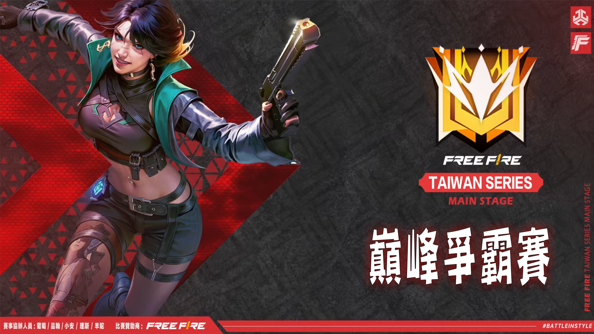
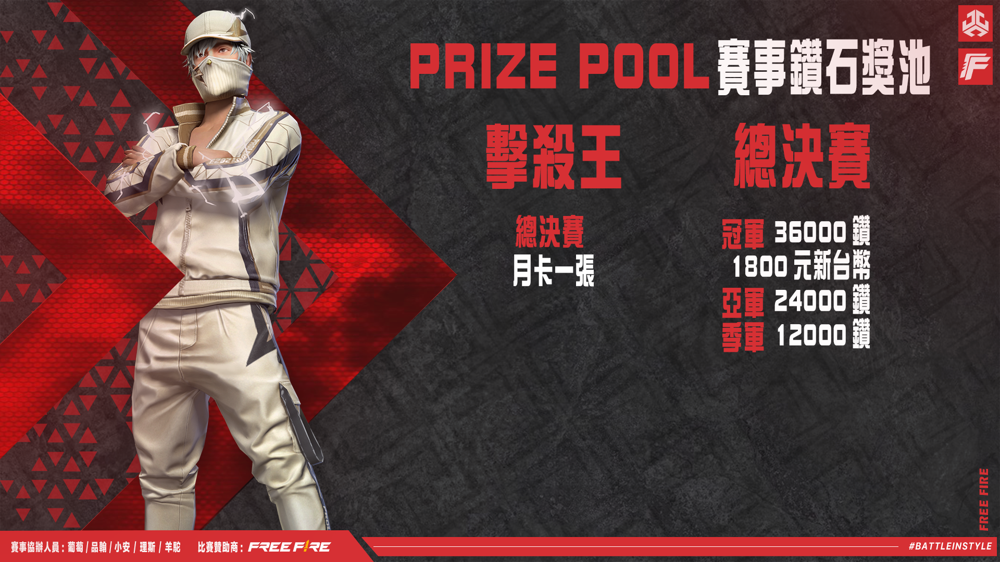

巔峰爭霸賽
☰
主頁
積分查詢
YT頻道
主頁
積分查詢
YT頻道

聯賽簡介
賽程介紹
日期
賽事階段
比賽地圖
時間
W1D1
12強DAY1
百/天/阿/未
20:00
W1D2
12強DAY2
天/阿/未/喀
20:00
W2D1
12強DAY3
阿/未/喀/百
20:00
W2D2
12強DAY4
未/喀/百/天
20:00
W3D1
12強準決賽
喀/百/天/阿
20:00
W3D2
12強總決賽
百/天/阿/未
20:00

聯賽獎勵
冠軍隊伍
36000鑽石+1800元新台幣
亞軍隊伍
24000鑽石
季軍隊伍
12000鑽石
擊殺王
月卡一張